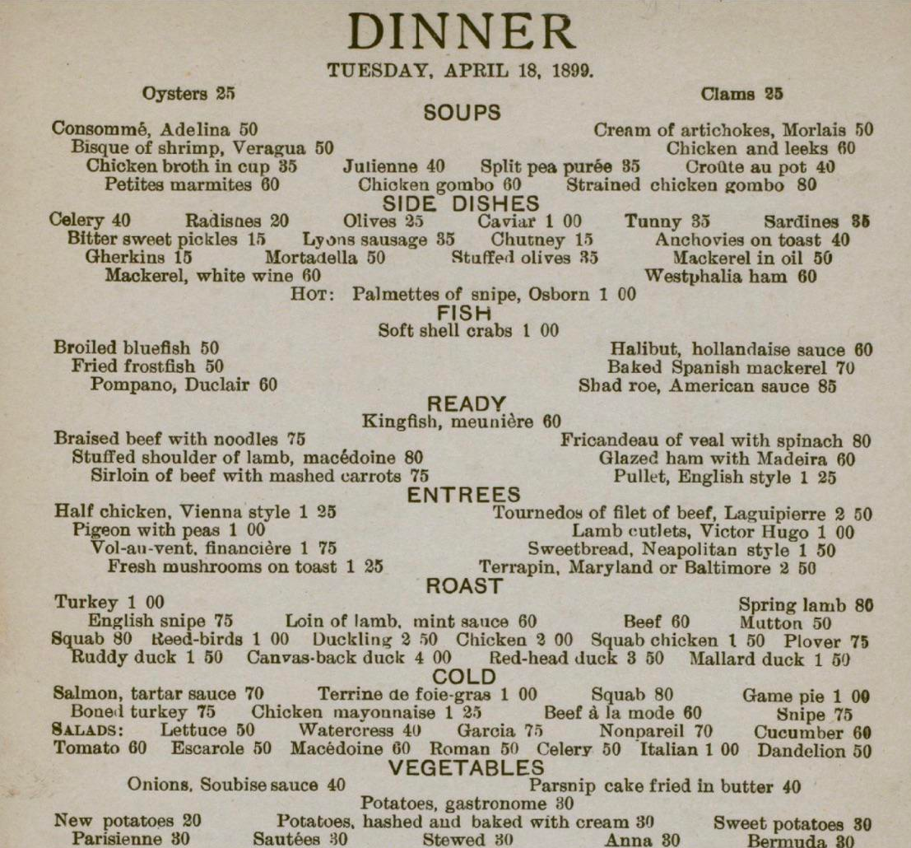
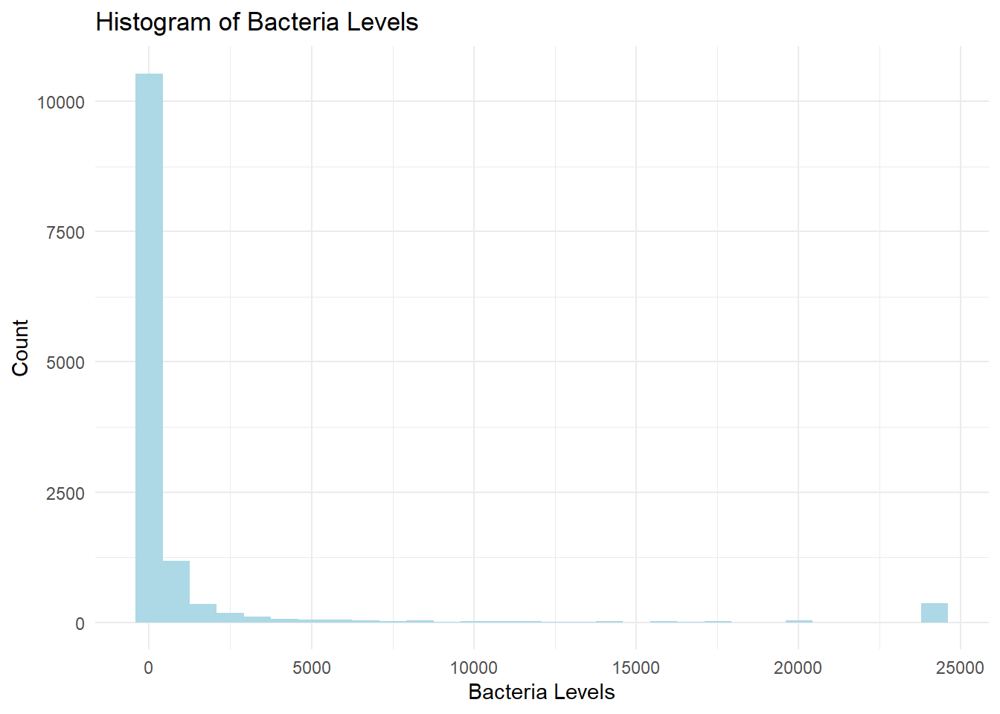
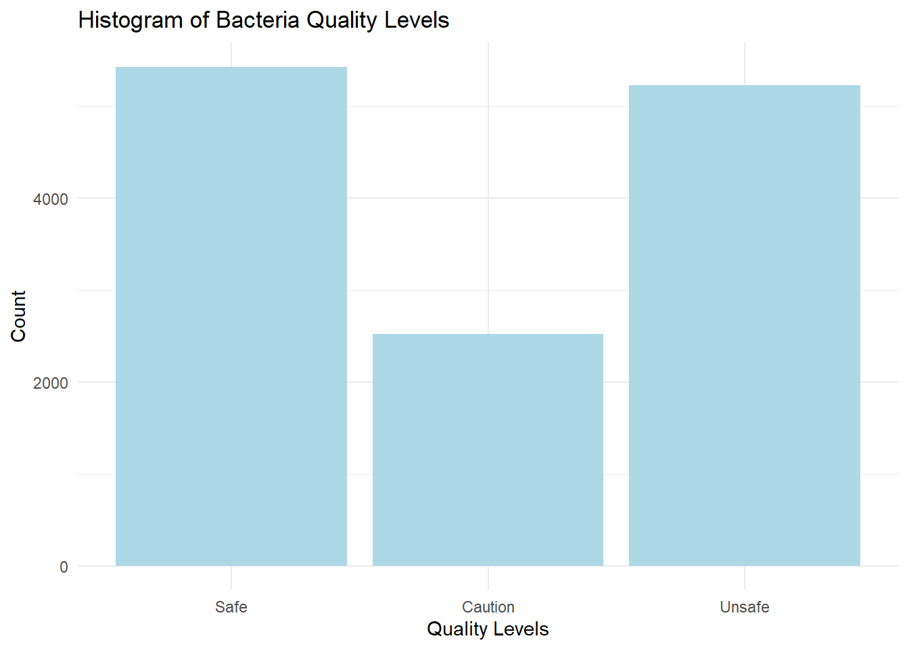
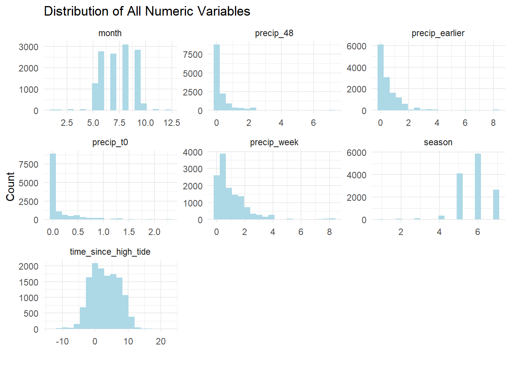
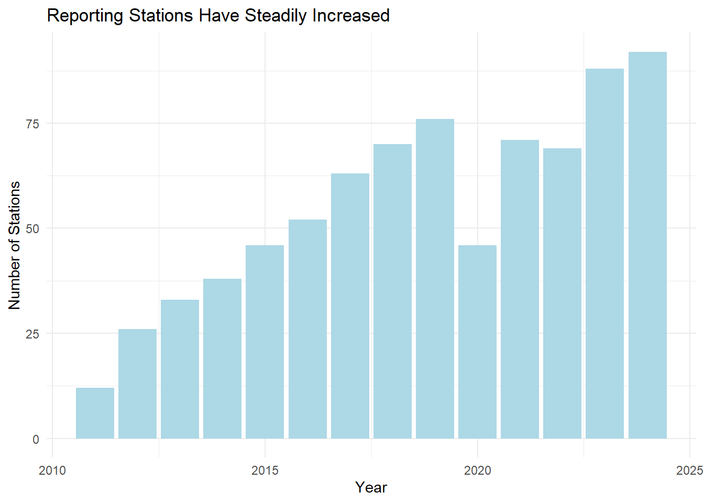
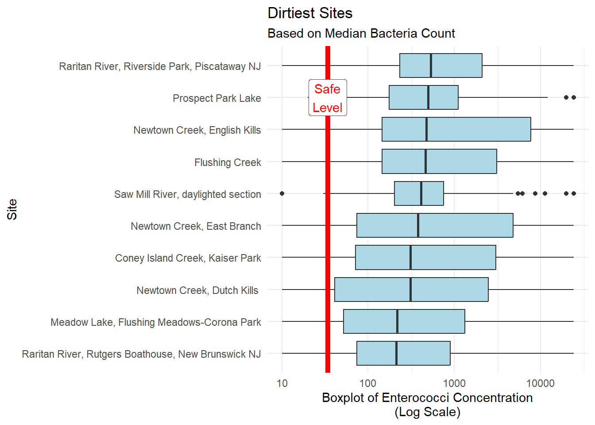

Code
library(tidyverse)
library(here)
library(googlesheets4)
library(rvest)
library(duckplyr)
library(arrow)
library(leaflet)
library(htmltools)
library(sf)
library(tidymodels)
library(gt)
# enterococci thresholds
SAFE = 34
CAUTION = 104This is an exercise in using machine learning to predict the level of harmful bacteria in New York Harbor based on environmental factors like tidal conditions, rainfall and location. Among the reasons this is useful is understanding how to rebuild a marine life ecosystem in the harbor, where oysters were a keystone species. We use the R data science language, Tidymodel tools from Posit.co to build the model and public data provided by The Billion Oyster Project using volunteer water sampling.
The model shows some ability to predict “safe” and “unacceptable” bacterial concentrations but false predictions are quite high.
New York Harbor is one of the world’s greatest natural harbors. Those of us who live in New York City today see it mainly as an obstacle that we travel over or under. In our more reflective moods we see the history of what was in the piers. We can easily imagine the enormous ship traffic the piers once supported. What we can’t see are the echoes of the vibrant ecosystem of marine life that once thrived beneath the surface. The harbor sustained a rich diversity of marine life that provided abundant sustenance for the indigenous people before the arrival of Europeans and later for the colonists and migrants who arrived in their millions.
Oysters were the keystone species for this ecosystem. They were so abundant that they, as filter feeders, filtered the entire volume of the harbor every few days. They provided habitat for other marine life and helped to stabilize the shoreline. At one point fully a third of all the World’s oyster harvest came from New York Harbor. Pearl Street in Manhattan was the site of a giant oyster shell midden left by the Lenape people. The oyster was the food of rich and poor alike. Stories of the colorful characters in Gilded Age New York are replete with oyster orgies at Delmonico’s restaurant. Oysters were so important to the economy of the city that before it became “The Big Apple” it was called “The Big Oyster.”

Alas, by the late 19th century, the oyster beds were so depleted that the oyster industry collapsed. The risk of over-harvesting was recognized as early as 1715 when “An Act for Preserving of Oysters” was passed but the law was suspended in 1807 and harvesting became relentless. This was also the harbinger of the harbor’s decline as species up the food chain suffered in parallel. Pollution was the final blow. Industry along the Hudson River flushed toxins downstream and, in 1856, the “Combined Sewer Outflow” system was established. This combines storm water drainage with raw sewage sent to treatment plants. During heavy rain, the system overflows and raw sewage is pumped into the harbor. After the passage of the Clean Water Act in 1972 industrial pollution declined but, incredibly, the CSO remains and is the major source of pollutants around the city.
Today we understand the need to support keystone species as vital to an ecosystem. The Billion Oyster Project (BOP) is a non-profit organization whose mission is to restore oyster reefs to New York. They are doing this work in collaboration collaboration with schools, universities, and government agencies. I have been a supporter of their mission for several years now. Getting the public to understand the importance of clean water is an important part of this effort. The project has been using volunteers to collect water quality data from the harbor since 2014 and the data are available to the public in a water quality spreadsheet.
Downloading the full spreadsheet is a bit slow and there is some cleaning involved so we’ll use data files we previously created. If you want to replicate this the code for downloading and processing the spreadsheet is below.
library(tidyverse)
library(here)
library(googlesheets4)
library(rvest)
library(duckplyr)
library(arrow)
library(leaflet)
library(htmltools)
library(sf)
library(tidymodels)
library(gt)
# enterococci thresholds
SAFE = 34
CAUTION = 104# Get Water Quality Data from BOP ----------------------------------
# no need for a google account to access this sheet
googlesheets4::gs4_deauth()
wq_url <-
"https://docs.google.com/spreadsheets/d/1813b2nagaxZ80xRfyMZNNKySZOitro5Nt7W4E9WNQDA/edit?usp=sharing"
# DOWNLOAD meta data worksheet
wq_meta <- gs4_get(wq_url)
# take 400 rows of metadata to accomodate future growth in testing stations (up to 400 <grin>)
# assumes row 10 is column names, column A is site ID which is duplicated in column D
wq_meta_raw <- read_sheet(wq_url,"Information",range = "B10:BA400")
# Clean Meta Station Data ----------------------------------
wq_meta <- wq_meta_raw |>
# remove empty columns by selecting only columns where names starts with a letter
select(!matches("^\\.")) |>
janitor::clean_names() |>
rename("site" = 2) |>
# remove empty rows
filter(!is.na(site)) |>
mutate(site_id = as.factor(site_id)) |>
# why these come in as a list of 1 is beyond me and one value is NULL
# this is some complicated dplyr-fu.
mutate(district_council_number = as.factor(unlist(map(
district_council_number, ~ ifelse(is.null(.x), NA, .x)
)))) |>
mutate(harmonic_noaa_tide_stations = as.factor(unlist(
map(harmonic_noaa_tide_stations, ~ ifelse(is.null(.x), NA, .x))
))) |>
# FIXED as of Aug 2024. some longitudes are erroneously positive
mutate(longitude = if_else(longitude > 0, -longitude, longitude)) |>
mutate(currently_testing = as.logical(if_else(is.na(currently_testing), 0, 1))) |>
rename_with( ~ "nyc_dep_wrrf_or_sewershed", starts_with("associated")) |>
# make NA entries in character columns actual NA so there is only one kind of NA
mutate(across(where(is.character), \(x) if_else(x == "N/A", NA, x))) |>
# some columns are NA because they are in NJ. Make "NJ" the value
mutate(
district_council_number = if_else(
district_council_number == "N/A",
"NJ",
district_council_number
)
) |>
mutate(nyc_dep_wrrf_or_sewershed = if_else(
is.na(nyc_dep_wrrf_or_sewershed),
"NJ",
nyc_dep_wrrf_or_sewershed
)) |>
mutate(
nys_dec_water_body_classification = if_else(
is.na(nys_dec_water_body_classification),
"NJ",
nys_dec_water_body_classification
)
)
# save meta data as parquet file
# arrow::write_parquet(wq_meta,here("data/wq_meta.parquet"))
# DOWNLOAD water quality data worksheet ---------------------------------------------
wq_data_raw <- read_sheet(wq_url,"Data")
data_names <- c("site","site_id","date","year","month","high_tide","sample_time","bacteria",
"precip_t0","precip_t1","precip_t2","precip_t3","precip_t4",
"precip_t5","precip_t6","notes")
# get average sample time and use that for NA sample times
sample_time_avg <- wq_data_raw$`Sample Time` |>
mean(na.rm = TRUE) |>
as.POSIXct()
# function to extract day of week from date
day_of_week <- function(x) {
x |>
lubridate::wday(week_start = 7) |>
factor(levels = 1:7,labels = c("Sun","Mon","Tue","Wed","Thu","Fri","Sat"))
}
# clean up data
wq_data <- wq_data_raw |>
set_names(data_names) |>
mutate(date = as_date(date)) |>
# change NA sample times to average of all sample times. Good idea?
mutate(sample_time = if_else(is.na(sample_time),sample_time_avg,sample_time)) |>
mutate(sample_time = hms::as_hms(sample_time)) |>
mutate(sample_day = day_of_week(date),.before = bacteria) |>
mutate(high_tide = hms::as_hms(high_tide)) |>
# add date to sample time
mutate(sample_time = ymd_hms(paste(date,sample_time),tz= "America/New_York")) |>
mutate(high_tide = ymd_hms(paste(date,high_tide),tz= "America/New_York")) |>
mutate(across(where(is.list), as.character)) |>
# We chose to make "Trace" and "<10" into zero.
mutate(across(where(is.character), .fns = ~ str_replace(.x, "<10", "0"))) |>
mutate(across(where(is.character), .fns = ~ str_replace(.x, "Trace", "0"))) |>
# > 24196 test limit? This value is so far out of the range of the other values
# that it might as well be infinity.
mutate(across(where(is.character), .fns = ~ str_replace(.x, ">", ""))) |>
# get rid of snow inches next to precip as water
mutate(across(where(is.character), .fns = ~ str_replace(.x, "\\(.+\\)", ""))) |>
mutate(across(where(is.character), .fns = ~ na_if(.x, "N/A"))) |>
mutate(across(contains("precip"), as.numeric)) |>
mutate(bacteria = as.numeric(bacteria)) |>
mutate(notes = replace_na(notes, "")) |>
# fix some typos
mutate(site = str_replace(site, "Daylighted Section", "daylighted section")) |>
mutate(site = str_replace(site, "Govenors", "Governors")) |>
# classify bacteria levels according to NY DEP standards
mutate(site = as.factor(site)) |>
mutate(site_id = as.factor(site_id))
# write to parquet
# arrow::write_parquet(wq_data,here("data/wq_data.parquet"))# load data files
water_body_classifications <- read_csv("data/NYDEC_water_classifications.csv",col_types = "fcc")
wq_meta <- arrow::read_parquet("data/wq_meta.parquet")
wq_data_raw <- arrow::read_parquet("data/wq_data.parquet")While we cleaned up the data in the previous section, we still might want to do some feature engineering to get the data ready for modeling. In particular, the bacterial levels are classified according to NY DEP standards as “SAFE” or “UNSAFE” with a another category in between that indicates heightened vigilance which we’ll call “CAUTION,” so let’s make a column for that.
The data contains rainfall amounts for each day in the week preceding the sample date. The NY DEP standard is to use the 48-hour rainfall amount as a predictor of bacterial levels. We’ll aggregate up the rainfall columns into three non-overlapping intervals, same day, previous 48 hours and earlier days in the week. It’s worth noting that rainfall for the sample day is for the entire 24-hour period and not just preceding the time of the sample.
While we have the precise location of each sampling site it might be useful to have general location information. This will include the water body classification, the sewershed, the name of the body of water and the lab processing the samples.
The month is a cyclical feature. December, month number 12, is closer in climate to month number 1 than it is to month number 6, so we’ll recode the month numbers to reflect that, setting August as the hottest month.
Finally, we’ll convert all NAs in the factor columns to a “missing” level. This will let us keep rows with NA in the models but all missing will have the same value. This is a choice that could be revisited later.
# get all levels of lab_analysis columns matched with year
all_labs <- wq_meta |>
select(contains("lab_analysis"),site_id) |>
pivot_longer(cols = contains("x"),
names_to = "year",
values_to = "lab") |>
mutate(year = as.numeric(str_extract(year,"[0-9]+"))) |>
mutate(lab = as.character(lab)) |>
filter(lab != "NA") |>
mutate(lab = as.factor(lab))
# convert all N/As in factor columns to a "missing" level
# This will let us keep rows with NA in the models but all missing will have the same value
# good or bad?
wq_meta <- wq_meta |>
mutate(across(where(is.factor), ~ fct_na_value_to_level(.x,level = "missing")))
# feature engineering
wq_data <- wq_data_raw %>%
# use of dplyr pipe needed for duckplyr, not native "|>" pipe
# make 2-day precip column since 48-hour precip is a DEP standard
# since observation time is typically in the morning don't include the current day's precip
# since we don't know if it came before, during or after collection
mutate(precip_week = rowSums(select(., starts_with("precip")), na.rm = TRUE),.after="bacteria") %>%
mutate(precip_48 = rowSums(select(., precip_t1,precip_t2), na.rm = TRUE),.after="bacteria") %>%
mutate(precip_earlier = rowSums(select(., precip_t3,precip_t4,precip_t5,,precip_t6), na.rm = TRUE),.after="precip_48") %>%
select(-precip_t1,-precip_t2,-precip_t3,-precip_t4,-precip_t5,-precip_t6) %>%
# categorize bacteria levels as quality levels
mutate(quality = as_factor(cut(
bacteria,
breaks = c(-1,SAFE, CAUTION, Inf),
labels = c("Safe", "Caution", "Unsafe")
))) %>%
# compute time between sample time and high tide
mutate(time_since_high_tide = as.numeric(difftime(sample_time,high_tide,units = "hours")),
.after = "sample_time") %>%
as_tibble()
# add some meta data that might be interesting in prediction
# add water body type, water body and sewershed from metadata
wq_data <- wq_data |>
left_join(by = "site_id",select(wq_meta,
site_id,
water_body,
nys_dec_water_body_classification,
nyc_dep_wrrf_or_sewershed)
) |>
# change all character columns to factors
mutate(across(where(is.character), as.factor)) |>
# rename columns
rename(water_class = nys_dec_water_body_classification,
sewershed = nyc_dep_wrrf_or_sewershed)
# create a column that corresponds the relative temperature of the month
# July is the hottest month in NYC
wq_data <- wq_data |>
mutate(season = as.numeric(factor(month(date), levels = 1:12, labels = c(0,1,2,3,4,5,6,5,4,3,2,1))))
wq_data <- wq_data |>
left_join(all_labs,by = c("site_id","year"))
# convert all N/As in factor columns to a "missing" level
# This will let us keep rows with NA in the models but all missing will have the same value
# good or bad?
#wq_data <- wq_data |>
# mutate(across(where(is.factor), ~ fct_na_value_to_level(.x,level = "missing")))
wq_data <- wq_data |>
mutate(lab = fct_na_value_to_level(lab,level = "missing")) |>
drop_na()Let’s start by looking at a map of all the sampling sites. Many sites (in red, below) are no longer being tested. The upper half of Manhattan, both on the Hudson side and the East River side are not included in the most recent data. We have to be careful about drawing conclusions about changes over time for the whole sampling set because the sites are not constant.
# convert wq_meta into a simple features object
wq_meta_sf <- wq_meta |>
left_join(water_body_classifications,
by = c("nys_dec_water_body_classification" = "water_body_class")) |>
st_as_sf(coords = c("longitude","latitude"),crs = 4326)
# display a leaflet map --------------------------------------------------------
map_labels <- glue::glue("<strong>{wq_meta_sf$site}</strong><br/>
Currently Testing? </strong>{wq_meta_sf$currently_testing}<br/>
Sewershed: {wq_meta_sf$nyc_dep_wrrf_or_sewershed}<br/>
Use: {wq_meta_sf$best_uses}") |>
lapply(htmltools::HTML)
wq_meta_sf |>
leaflet() |>
addTiles() |>
addCircleMarkers(radius = 5,
label = ~map_labels,
color = ~ifelse(currently_testing,"green","red"))The data contains the “sewershed” for each site. Sewersheds are areas of the city that drain into the rivers from a particular section of the sewer system and treatment plant. It may be that particular sewersheds are more likely to overflow during heavy rain and thus more prone to high bacteria levels. We shall see.
A problem we often face with prediction models is the data is not nicely distributed. Bacteria levels in our dataset are very skewed. We get a more balanced distribution if we bin the levels into DEP quality categories. We will use this as our target variable for prediction.
# ggplot histogram of bacteria levels
wq_data |>
ggplot(aes(x = bacteria)) +
geom_histogram(bins = 30,fill = "lightblue") +
labs(title = "Histogram of Bacteria Levels",
x = "Bacteria Levels",
y = "Count") +
theme_minimal()
# ggplot histogram of quality levels
wq_data |>
ggplot(aes(x = quality)) +
geom_bar(fill = "lightblue") +
labs(title = "Histogram of Bacteria Quality Levels",
x = "Quality Levels",
y = "Count") +
theme_minimal()

Similarly, we can look at the distributions for the other numeric features in our dataset. We have already converted month numbers into a seasonality feature so we won’t use “month” as a predictor. We see that most of the observations happen in the warm months.
Precipitation shows a skewed distribution. This is an example of how EDA can help us think about the model features. Most days it does not rain but the wider time windows are slightly more evenly distributed, so let’s just use the precipitation for the entire prior week in the model.
Tide times are evenly distributed, as we would expect.
# distribution of numeric features
wq_data |>
ungroup() |>
select(-year,-bacteria) |>
select(is.numeric) |>
gather() |>
ggplot(aes(x = value)) +
geom_histogram(bins=20,fill = "lightblue") +
facet_wrap(~key, scales = "free") +
labs(title = "Distribution of All Numeric Variables",
y = "Count",x="") +
theme_minimal()
We might be interested in examining quality trends over time. This has to be done with caution because the number of reporting stations has increased over time, excepting during the COVID crisis. Let’s look at trends using only those stations that have been reporting for the last ten years. We add annual rainfall to see if there is any obvious correlation. Alas, water quality (defined as bacteria levels) has not been improving in the last decade.
# show that reporting stations have increased over time
wq_data |>
mutate(year = year(date)) |>
group_by(year) |>
summarise(n = n_distinct(site_id)) |>
ggplot(aes(x = year, y = n)) +
geom_col(fill = "lightblue") +
labs(title = "Reporting Stations Have Steadily Increased",
x = "Year",
y = "Number of Stations") +
theme_minimal()
# get average daily rainfall by year
annl_rain <- wq_data |>
group_by(year) |>
summarise(annual_rainfall = mean(precip_week,na.rm = TRUE)*52)
# plot median bacteria levels over time only for sites that have been reporting for the all time periods
wq_10 <- wq_data |>
# filter out stations that have been reporting for less than 10 years
group_by(site) |>
summarise(n_years = n_distinct(year)) |>
filter(n_years > 9) |>
select(site) |>
inner_join(wq_data, by = "site") |>
ungroup() |>
filter(year(date) > year(Sys.Date())-11)
last_obs <- wq_data$date |> max()
first_obs <- year(last_obs)-10
rain_axis <-1
wq_10 |>
ungroup() |>
filter(year > 2011) |>
summarise(.by = year, median_bacteria = median(bacteria)) |>
left_join(annl_rain) |>
arrange(year) |>
ggplot(aes(x = year, y = median_bacteria)) + geom_col(fill = "lightblue") +
geom_line(aes(x = year, y = annual_rainfall), color = "blue") +
geom_hline(yintercept = 34, color = "red") +
annotate("text", x = 2016, y = 34, label = '"Safe" Level = 34 Colonies', vjust = -1) +
# label the y-axes
scale_x_continuous(breaks = seq(2000,2024,1)) +
# put totat_rainfall on secondary y-axis
scale_y_continuous(sec.axis = sec_axis(~./rain_axis, name = "Annual Rainfall (Blue Line")) +
labs(y = "Median Bacteria Concentration (Blue Bar)",
title= str_to_title("water is not getting cleaner over time"),
subtitle = glue::glue("Sites in NY Harbor Reporting Continuously from {first_obs} to {last_obs}")
) +
theme_minimal()

In addition to numeric variables we have several categorical (aka “factor”) variables in the dataset. Each sampling site has a unique identifier, an associated sewershed, the body of water it is in (e.g. Hudson River) and a classification of suitable usage of the water body (e.g. fishing, swimming, etc).
More recently, the dataset has included the lab that did the water analysis. It might be interesting to see if a lab bias exists but fewer than half the observations have this information, so we don’t expect much.
Are some sites cleaner or dirtier than others? Yes. As we would expect, sites in water bodies with more flow are cleaner.
# show boxplot of cleanest and dirtiest ----------------------------------------
site_boxplots <- function(wq_data, label = "Cleanest") {
median_all <- median(wq_data$bacteria)
# show a boxplot of bacteria concentration by site
selected_sites <- wq_data |>
# avoid Inf log values
# mutate(bacteria = bacteria + .001) |>
# mutate(bacteria = ifelse(bacteria == 0, 1, bacteria)) |>
group_by(site) |>
nest() |>
rowwise() |>
mutate(n_obs = nrow(data)) |>
filter(n_obs > 100) |>
mutate(median_bacteria = median(data$bacteria)) |>
ungroup()
if (label == "Cleanest") {
selected_sites <- slice_min(selected_sites, order_by = median_bacteria, n = 10)
} else {
selected_sites <- slice_max(selected_sites, order_by = median_bacteria, n = 10)
}
selected_sites |>
unnest(data) |>
ggplot(aes(x = reorder(factor(site), median_bacteria), y = bacteria)) +
scale_y_log10(oob = scales::squish_infinite) +
geom_boxplot(fill = "lightblue") +
# geom_violin(draw_quantiles = .5) +
# geom_jitter(width = .1) +
# annotate("text", x = log(SAFE)-2, y = 1500, label = "Safe Levels", color = "darkgreen") +
labs(
title = glue::glue("{label} Sites"),
subtitle = "Based on Median Bacteria Count",
x = "Site",
y = "Boxplot of Enterococci Concentration\n(Log Scale)"
) +
coord_flip() +
geom_hline(yintercept = SAFE,
color = "red",
linewidth = 2) +
annotate(
"label",
x = 9,
y = SAFE,
label = "Safe\nLevel",
color = "red"
) +
theme_minimal()
}
site_boxplots(wq_data, "Cleanest")
site_boxplots(wq_data, "Dirtiest")

Next to linear regression, random forests are one of the most popular machine learning algorithms. Random forests are a type of learning method, where multiple decision trees are trained on different subsets of the data and then combined to make a prediction. Since random forests can handle a mix of categorical and numeric variables they are ideal for our dataset. You can learn more about this class of models here. The tidymodels suite of packages from posit.co makes it easy to build and test a random forest model in R.
Models can easily describe any data set but we are interested in predicting out of sample data. To do this we need to split our data into a training set and a testing set. We will use the training set to build the model and the testing set to evaluate the model’s ability to predict. We have over 13,000 individual samples across all dates and sites. Our training set is a sort-of random sample of 75% of the data. I say “sort of” because we need stratify the split so that the same proportion of “SAFE”, “CAUTION” and “UNSAFE” samples are in both the training and testing sets.
At this point we are ready to set up the model. The tidymodels framework involves creating a workflow that starts with a model, then a “recipe” for preproccessing the data and finally a “fit” stage where the model is trained on the data. This framework makes it easy to try out different models and different recipes. We’ll use the random forest model in the ranger package. The recipe will normalize all the numeric variables. This will help with the skewness of the precipitation data.
Select data, add model, add recipe and fit. That’s it? Well, the coding is the easy part. In truth, there is a lot to think about in deciding what machine learning algorithm is best suited to the task, how to transform the inputs for imbalanced data and how to tune the model. The good news is the tidymodels framework makes it easy to experiment with different approaches. Check out the tidymodels site for a doorway to the rabbit hole of machine learning in R.
# Model ------------------------------------------------------------------------
# select only variables for model
wq_subset <- wq_data |>
# make year a category, rather than numeric
mutate(year = as.factor(year)) |>
select(
quality,
site_id,
year,
time_since_high_tide,
# precip_t0,
# precip_48,
# precip_earlier,
precip_week,
water_body,
water_class,
sewershed,
lab
) |>
# remove rows with missing values
drop_na()
# or...we could aggregate the precipitation data
# wq_subset <- wq_subset |>
# #sum across all precip columns
# mutate(precip_total = precip_t0 + precip_48 + precip_earlier) |>
# select(-c(precip_t0, precip_48, precip_earlier))
# seeding the random number generator ensures reproducibility
set.seed(123)
# split data into training and testing sets
wq_split <- initial_split(wq_subset, prop = 0.75, strata = quality)
wq_train <- training(wq_split)
wq_test <- testing(wq_split)
# choose the model
wq_rf <- rand_forest() |>
set_engine("ranger",importance = "impurity") |>
set_mode("classification")
# create a recipe
wq_recipe <- recipe(quality ~ ., data = wq_train) |>
step_normalize(all_numeric_predictors())
# combine into a workflow
wq_wf <- workflow() |>
add_model(wq_rf) |>
add_recipe(wq_recipe)
# fit with training data
wq_fit<- wq_wf |>
fit(data = wq_train)Unlike linear regression, random forests are not easily interpretable. We can’t just look at the coefficients to see how each variable contributes to the prediction. After fitting to our training set, we can look at the variable importance plot. This plot shows the relative contribution of each variable to the prediction. Still, we don’t know the direction of the relationship or the strength of the relationship. We can only say that the variable is important in predicting the outcome.
# show variable importance
wq_fit |>
extract_fit_parsnip() |>
vip::vip(aesthetics = list(fill = "lightblue")) +
labs(title = "Water Quality Variable Importance",
subtitle = 'Random Forest Classifier to Predict "Safe", "Caution" or "Unsafe ') +
theme_minimal()
Rainfall looks to be the most important variable, followed by tide time and site location. Surprisingly, the sewershed and water body are far down the list. The more specific location factor, site_id contributes more. Again, this is not like linear regression, but if we look at the correlation of just rainfall and quality, there is some relation. This reinforces our intuition that CSOs are a driver of pollution.
wq_subset |>
summarise(.by = quality, median_precip = median(precip_week)) |>
ggplot(aes(quality, median_precip)) +
geom_col(fill = "lightblue") +
labs(subtitle = "Median Weekly Precipitation by Water Quality",
title = "More Rain, More Bacteria",
x = "Water Quality",
y = "Median Weekly Precipitation (inches)") +
theme_minimal()
As noted above, we expect to get a good fit in-sample since we are really just describing the training set. The output of the the model is expressed as the liklihood each observation is from the “Safe”, “Caution” or “Unsafe” class. We can plot the predicted probability of each class for each observation. The plot below shows the predicted probability of each class for each observation in the training set. The color of the points indicates the actual class. The diagonal line is where the predicted probability equals the actual probability. The further the points are from the line, the less confident the model is in its prediction.
For example, in the chart below, the “SAFE” panel contains all the observations where the bacteria level is in the “SAFE” range. The dots in the lower right corner are the observations where the model is nearly certain of it’s prediction, 100% likely that the water is “SAFE” and 0% likely the water is “UNSAFE.” The balance of the dots are in the correct quadrant so our description of the training set is pretty good.
# plot prediction confidence
wq_pred_train <- wq_fit |>
augment(new_data = wq_train)
wq_pred_train |>
ggplot(aes(x = .pred_Safe, y = .pred_Unsafe, color = quality)) +
facet_wrap(~quality) +
geom_point() +
geom_abline() +
scale_color_manual(values = c("green", "orange","red")) +
labs(title = "Prediction Confidence",
subtitle = "It's easy to get a good fit in-sample.",
x = "Probablility Actual Is Safe",
y = "Probablility Actual Is Unsafe")
Now let’s fit the model to the testing set and see how well it predicts the out-of-sample data. While the larger mass of points seems to be in the correct quadrants there are many observations where the model is very confident, but wrong.
# plot prediction confidence
wq_pred <- wq_fit |>
augment(new_data = wq_test)
xt <- wq_pred |>
conf_mat(truth = quality, estimate = .pred_class) |>
# return just the confusion matrix
pluck("table") |>
as_tibble() |>
group_by(Prediction) |>
mutate(.prop = n/sum(n)) |>
ungroup()
safe_risk <- xt |>
filter(Prediction == "Safe",Truth == "Safe") |>
pull(.prop) |> prod(100) |> round()
unsafe_risk <- xt |>
filter(Prediction == "Safe",Truth == "Unsafe") |>
pull(.prop) |> prod(100) |> round()
wq_pred |>
ggplot(aes(x = .pred_Safe, y = .pred_Unsafe, color = quality)) +
facet_wrap(~quality) +
geom_point() +
geom_abline() +
scale_color_manual(values = c("green", "orange","red")) +
labs(title = "Prediction Confidence",
subtitle = "Many predictions are confidently wrong.",
x = "Probablility Actual Is Safe",
y = "Probablility Actual Is Unsafe")
We can more precisely quantify the performance of the model with a “truth table.” Here we see the actual and predicted counts of each class. Given a prediction, how likely is it to be correct? 62% of the “SAFE” predictions were correct, but 18% of the times when the model said the water was “SAFE” if was actually “UNSAFE,” which is probably the most problematic result. Would I swim in “safe” water where there is a 18% chance I might get sick? No. The model also has very little ability to identify “CAUTION” conditions. In fairness, the range of bacteria levels between “SAFE” and “UNSAFE” is very narrow so we expect that only slight changes in conditions would tip the observation into another category.
# show a confusion matrix
xt <- wq_pred |>
conf_mat(truth = quality, estimate = .pred_class) |>
# return just the confusion matrix
pluck("table") |>
as_tibble() |>
group_by(Prediction) |>
mutate(.prop = n/sum(n)) |>
ungroup()
xt_count <- xt |>
select(-.prop) |>
pivot_wider(names_from = Truth,values_from = n) |>
rowwise() |>
mutate(Total = sum(c(Safe,Caution,Unsafe)))
gt_domain <- xt_count |> select(-Total,-Prediction) |> max()
xt_prop <- xt |>
select(-n) |>
pivot_wider(names_from = Truth,values_from = .prop) |>
rowwise() |>
mutate(Total = sum(c(Safe,Caution,Unsafe)))
truth_table <- function(xt,type = c("count")){
gt_xt <- xt |>
gt(rowname_col = "Prediction") |>
tab_header(title = "Truth Table") |>
tab_spanner(label = "Truth", columns = where(is.numeric)) |>
# add stub header label
tab_stubhead(label = "Prediction")
if(type == "prop"){
gt_xt <- gt_xt |> fmt_percent(columns = where(is.numeric),decimals = 0)
} else {
gt_xt <- gt_xt |> fmt_number(columns = where(is.numeric),decimals = 0) |>
grand_summary_rows(
fns = list(id="Total",label = "Total") ~ sum(.)
) |>
tab_style(
style = cell_text(weight = "bold"),
locations = list(cells_stub_grand_summary(rows = "Total"))
)
}
# fmt_number(columns = where(is.numeric),decimals = 0) |>
# fmt_percent(columns = where(is.numeric),decimals = 0) |>
# color the cells with a heat map
gt_xt <- gt_xt |>
data_color(columns = 2:4,
direction = c("row"),
domain = c(0,if_else(type == "count",gt_domain,1)),
method = "numeric",
palette = "Blues") |>
# color prediction labels
tab_style(
style = list(cell_fill(color = "green"),cell_text(color = "black")),
locations = list(cells_column_labels("Safe"),
cells_body(column = 1,row = 1))
) |>
tab_style(
style = list(cell_fill(color = "yellow"),cell_text(color = "blaCk")),
locations = list(cells_column_labels("Caution"),
cells_body(column = 1,row = 2))
) |>
tab_style(
style = list(cell_fill(color = "red"),cell_text(color = "white")),
locations = list(cells_column_labels("Unsafe"),
cells_body(column = 1,row = 3))
) |>
# color Truth labels
tab_style(
style = list(cell_fill(color = "green"),cell_text(color = "black")),
locations = cells_stub("Safe")
) |>
tab_style(
style = list(cell_fill(color = "yellow"),cell_text(color = "black")),
locations = cells_stub("Caution")
) |>
tab_style(
style = list(cell_fill(color = "red"),cell_text(color = "white")),
locations = cells_stub("Unsafe")
) |>
tab_style(
style = cell_text(weight = "bold"),
locations = list(cells_body(columns = 1),
cells_column_labels(),
cells_column_spanners(),
cells_title(),
cells_stub(),
cells_stubhead())
)
return(gt_xt)
}
roc <- wq_pred |>
roc_auc(truth = quality, .pred_Safe,.pred_Caution,.pred_Unsafe)
truth_table(xt_prop,"prop")| Truth Table | ||||
|---|---|---|---|---|
| Prediction |
Truth
|
|||
| Safe | Caution | Unsafe | Total | |
| Safe | 62% | 20% | 18% | 100% |
| Caution | 40% | 29% | 31% | 100% |
| Unsafe | 17% | 18% | 66% | 100% |
Another common way to visualize the performance of a model is with a “receiver operator characteristic” (ROC) curve. The ROC curve shows the trade off between true positives and false positives for each class. The larger the area under the curves (AUC), the better the model. An AUC of 1.0 is perfect while 0.5 is what random chance would show. In our case we have a combined AUC of 0.73, which is better than useless but not great.
# plot a ROC curve
wq_pred |>
roc_curve(truth = quality, .pred_Safe,.pred_Caution,.pred_Unsafe) |>
ggplot(aes(x = 1 - specificity, y = sensitivity,color=.level)) +
geom_path() +
scale_color_manual(values = c("orange","green","red")) +
geom_abline(lty = 3) +
coord_equal() +
labs(
title = "ROC Curve",
subtitle = "All Three Water Classifications",
x = "False Positive Rate",
y = "True Positive Rate",
color = "Classification"
) +
theme_bw()
We can easily tweak this model. Looking at rainfall as separate daily factors improves the truth table slightly but masks rainfall as the most important factor. We can quickly visualize the difference using the ROC. Splitting rainfall into three separate time windows rather than the full week improves the model slightly.
# select only variables for model
wq_subset_2 <- wq_data |>
# make year a category, rather than numeric
mutate(year = as.factor(year)) |>
select(
quality,
site_id,
year,
time_since_high_tide,
precip_t0,
precip_48,
precip_earlier,
# precip_week,
water_body,
water_class,
sewershed,
lab
) |>
# remove rows with missing values
drop_na()
# or...we could aggregate the precipitation data
# wq_subset <- wq_subset |>
# #sum across all precip columns
# mutate(precip_total = precip_t0 + precip_48 + precip_earlier) |>
# select(-c(precip_t0, precip_48, precip_earlier))
# seeding the random number generator ensures reproducibility
set.seed(123)
# split data into training and testing sets
wq_split_2 <- initial_split(wq_subset_2, prop = 0.75, strata = quality)
wq_train_2 <- training(wq_split_2)
wq_test_2 <- testing(wq_split_2)
# choose the model
wq_rf_2 <- rand_forest() |>
set_engine("ranger",importance = "impurity") |>
set_mode("classification")
# create a recipe
wq_recipe_2 <- recipe(quality ~ ., data = wq_train_2) |>
step_normalize(all_numeric_predictors())
# combine into a workflow
wq_wf_2 <- workflow() |>
add_model(wq_rf_2) |>
add_recipe(wq_recipe_2)
# fit with training data
wq_fit_2<- wq_wf_2 |>
fit(data = wq_train_2)
wq_pred_2 <- wq_fit_2 |>
augment(new_data = wq_test_2)
# plot a ROC curve
rc1 <- wq_pred |>
roc_curve(truth = quality, .pred_Safe,.pred_Caution,.pred_Unsafe) |>
filter(.level == "Unsafe")|>
mutate(.level = "Single Full Week Precip Factor")
rc2 <- wq_pred_2 |>
roc_curve(truth = quality, .pred_Safe,.pred_Caution,.pred_Unsafe) |>
filter(.level == "Unsafe") |>
mutate(.level = "3 Precip Factors")
bind_rows(rc1, rc2) |>
ggplot(aes(
x = 1 - specificity,
y = sensitivity,
color = .level
)) +
geom_path() +
geom_abline(lty = 3) +
labs(
title = "Effect of Feature Choices on Accuracy",
subtitle = 'ROC Curve for "SAFE" class only',
x = "False Positive Rate",
y = "True Positive Rate",
color = "Features Choice"
) +
coord_equal() +
theme_bw()
There are other metrics we could use but you get the idea. We could also tune the model to see if we could improve the performance, but in this case I found it did not help much so I don’t include it. Refer to the tidymodels site for tuning tips and more performance statistics.
We could also look for other variables not present in the BOP data set that might be useful. I’ve looked at imputing tidal current and including daily temperature. Neither made much of a difference. You can see these experiments on Github. They include techniques for downloading tide and weather data from the NOAA and matching NOAA stations to water sampling stations.
In this project we’ve seen how easy it is to build a powerful machine learning model using the tidymodels tools. As citizen scientists we were able to gather and use publicly available data to gain insight into the factors influencing water quality in New York Harbor. We’ve also learned about how important oysters were to the city in days past and can dream about a day (alas, not likely in our lifetimes) when oysters “as big as dinner plates” are once again living in the harbor.
Don’t forget to check out The Billion Oyster Project. They have lot’s of ways to contribute!